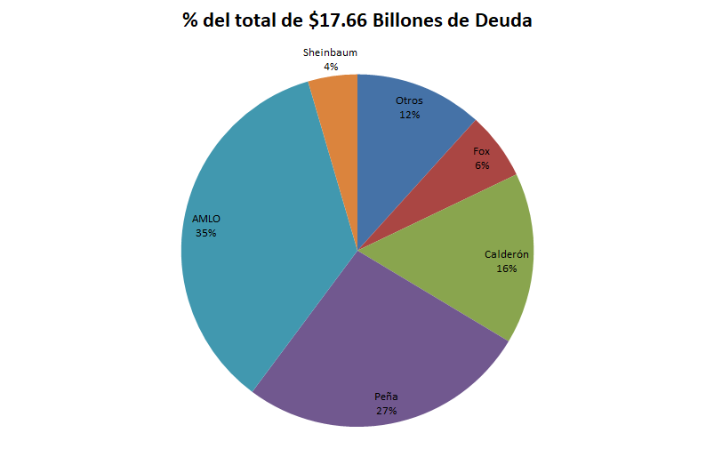

Publicaciones Recientes
Energéticos en México: Producción de PEMEX
Actualizado el: 27 de Junio de 2025
La producción de energéticos en México es una historia de drásticos altibajos, pero el volumen de barriles extraídos cuenta solo la mitad de la historia. El verdadero impacto en las finanzas del país reside en la compleja interacción entre la producción, los precios globales y los ingresos generados. La siguiente tabla desglosa estos tres factores por sexenio, revelando paradojas sorprendentes y desafiando muchas de las percepciones comunes sobre las épocas de "bonanza" y "crisis" petrolera en México.
| Presidente | Barriles de Petróleo Diarios Promedio[1] | Barriles de Condensados Diarios Promedio[1] | Total Promedio Diario Barriles de Hidrocarburos Líquidos[1] | Precio Promedio Sexenal Barril Petróleo (USD)[2] | Ingreso Promedio Diario por Hidrocarburos Líquidos (USD)[3] |
|---|---|---|---|---|---|
| Fox | 3,275,446 | Volúmenes menores que se incluían en la cifra de crudo | 3,275,446 | $31.64 | $103,635,111.44 |
| Calderón | 2,697,030 | Volúmenes menores que se incluían en la cifra de crudo | 2,697,030 | $79.27 | $213,793,568.10 |
| Peña | 2,200,894 | 20,350 A partir de Ene 2018 | 2,204,003 | $63.18 | $139,248,909.54 |
| AMLO | 1,641,484 | 125,685 | 1,767,169 | $64.28 | $113,593,623.32 |
| Sheinbaum (Oct 2024 - May 2025) | 1,378,679 | 261,010 | 1,639,689 | $64.43 | $105,645,162.27 |
[1] Producción de hidrocarburos líquidos por región y activo
[2] Precio de la Mezcla Mexicana de Petróleo
[3] El ingreso promedio diario se calcula multiplicando el Total de Hidrocarburos Líquidos por el Precio Promedio Sexenal del barril de petróleo. Cantidades no actualizadas por inflación.
NOTA: Los ingresos aquí estimados no incluyen costos de extracción ni de exportación. Se presentan únicamente con fines ilustrativos.
Puntos para la Reflexión
- Al comparar los sexenios de Fox y AMLO, ¿qué factor tuvo un mayor impacto en el ingreso diario promedio: el volumen de producción o el precio del barril?
- El sexenio de Calderón coincidió con la Gran Recesión de 2008. Observando la tabla, ¿qué elemento explica que los ingresos petroleros de México alcanzaran su máximo histórico precisamente en ese periodo?
- Observando el ingreso del gobierno actual, ¿qué desafío fiscal implica tener una entrada de recursos similar a la de hace dos décadas, pero con compromisos de gasto social (como las Ayudas del Bienestar) mucho mayores y elevados a rango constitucional?
Inflación en México: Comparativa por Sexenio
Actualizado el: 20 de Junio de 2025
La inflación es uno de los indicadores económicos más relevantes para medir el aumento generalizado y sostenido de los precios de bienes y servicios en México. En términos simples, refleja cómo el dinero se devalúa o pierde su poder de compra con el tiempo. Analizar su comportamiento por sexenio permite entender cómo factores internos y crisis internacionales han impactado el poder adquisitivo de la población y la estabilidad económica del país. En esta sección encontrarás una comparativa de la inflación acumulada durante los últimos gobiernos, acompañada del contexto de los principales eventos globales que influyeron en cada periodo.
| PRESIDENTE | PERIODO | INFLACION ACUMULADA EN SEXENIO[1] | CRISIS INTERNACIONALES |
|---|---|---|---|
| Fox | Dic 2000 - Nov 2006 | 29.03% | Crisis de las Punto Com (2001) Los USA estuvieron 8 meses en recesión económica |
| Calderón | Dic 2006 - Nov 2012 | 28.22% | Gran Recesión (2008) Los USA estuvieron 19 meses en recesión económica |
| Peña | Dic 2012 - Nov 2018 | 26.98% | |
| AMLO | Dic 2018 - Sep 2024 | 32.09% | Pandemia Covid-19 (2020) Los USA estuvieron 3 meses en recesión económica |
| Sheinbaum (En 8 meses de gobierno) |
Oct 2024 - May 2025 | 2.33% |
[1]Calculadora Inflación INEGI https://www.inegi.org.mx/app/indicesdeprecios/CalculadoraInflacion.aspx
Análisis: Sheinbaum presume reducción de pobreza, pero Banco Mundial proyecta estancamiento
Actualizado el: 12 de Junio de 2025
El 6 de junio de 2025, la presidente Claudia Sheinbaum presentó una gráfica destacando una reducción de 11 millones de personas en situación de pobreza entre 2018 y 2024. Las cifras provienen de la Plataforma de Pobreza y Desigualdad (PIP) del Banco Mundial, pero es crucial entender su naturaleza: los datos hasta 2022 se basan en las Encuestas Nacionales de Ingresos y Gastos de los Hogares (ENIGH), mientras que los de 2023 y 2024 son estimaciones (nowcasts).

Fuente:https://pip.worldbank.org/nowcasts
Si bien estas estimaciones confirman la reducción que presume el gobierno, también revelan una tendencia preocupante. Según las proyecciones más recientes del Banco Mundial, la pobreza en México se estancará e incluso podría aumentar ligeramente. Se estima que el número de personas pobres aumentará (a pesar de los programas sociales) 670,705 entre 2023 y 2025.

En este gráfico de la PIP se muestran las cifras hasta 2022 que se basan en las ENIGH:

Fuente: Calculadora de Pobreza – PIP
La tendencia a la baja en la pobreza ha sido constante desde 1996 como se puede observar según los datos que presenta la PIP. En la siguiente tabla se calcula la variación en puntos porcentuales intersexenal:
| Periodo | Presidente | (+) Aumento / (-) Reducción[1] |
|---|---|---|
| 1989 - 2018 | Salinas - Peña (Periodo Neoliberal) | -24.82% |
| 2000 - 2006 | Fox | -9.13% |
| 2006 - 2012 | Calderón | -1.87% |
| 2012 - 2018 | Peña Nieto | -8.74% |
| 2018 - 2022 | AMLO (parcial) | -7.94% |
Los gobiernos obradoristas suelen presentar la reducción de la pobreza como un logro excepcional, cuando en realidad ha sido una constante en la mayoría de los gobiernos mexicanos desde el inicio del periodo neoliberal.
Sheinbaum señaló que la reducción de 11 millones de personas representa una baja del 10.10%, donde ya se incluyen los años 2023 y 2024. Aunque es cierto que el gobierno de AMLO logró reducir la pobreza más que sus predecesores, la diferencia no es muy grande, pero ha sido impulsada principalmente por programas sociales financiados con deuda pública, más que por crecimiento económico, al tener el sexenio de AMLO el menor crecimiento del PIB de este siglo (ver sección del PIB de esta página).
¿Cuánto se ha pagado de FOBAPROA con los Impuestos de los Contribuyentes?
Publicado el: 1 de junio de 2025
A continuación se presenta un resumen del monto destinado al pago de la deuda relacionada con el FOBAPROA, desde su conversión en deuda pública en 1999 hasta diciembre de 2024. Se muestran los valores en pesos corrientes y dos métodos de actualización para dimensionar el impacto real en términos actuales.
| Concepto | 1999 - Dic 2024 Cantidades Sin Actualizar[1] | Cantidades Actualizadas a Dic 2024 (Método 1) | Cantidades Actualizadas a Dic 2024 (Método 2) | Observaciones | |
|---|---|---|---|---|---|
| Deuda Inicial | $687,844 | $687,844 | $2'228,367 | En Método 1 no se actualiza la deuda inicial; en Método 2 sí. | |
| + | Intereses Generados | $1'523,239 | $2'513,321 | $972,798 | Método 2 excluye la parte que corresponde a la actualización de la deuda inicial. |
| - | Cuotas Bancarias | $287,554 | $425,967 | $425,967 | Aportaciones de instituciones financieras. |
| - | Recuperaciones | $102,284 | $185,429 | $185,429 | Estimación debido a falta de fechas precisas. |
| - | Disminución Nuevo Programa | $104,770 | $188,938 | $188,938 | Estimación debido a falta de fechas precisas. |
| - | Rendimientos de Inversiones | $59,377 | $107,078 | $107,078 | Estimación debido a falta de fechas precisas. |
| - | Impuestos destinados al pago del FOBAPROA - Ramo 34 | $640,468 | $1,155,807 | $1,155,807 | Exclusivamente estos pagos, son pagos efectuados directamente con recursos presupuestarios provenientes de los impuestos. |
| = | Saldo por Pagar | $1'016,630 | $1,137,946 [2] | $1,137,946 [2] |
Cantidades en millones de pesos
Consideraciones:
- El total pagado con recursos del Gobierno Federal al cierre de 2024 se estima en $1.16 billones de pesos actualizados, provenientes del presupuesto público a través del Ramo 34.
- Además de estos pagos, el IPAB ha utilizado otras fuentes de financiamiento, como las cuotas bancarias y rendimientos de inversiones, para cubrir parte del servicio de la deuda.
- Algunas publicaciones, como por ejemplo: El Fobaproa ha costado más de $2 billones y todavía se debe otro, han reportado que todo lo que se ha pagado son intereses, cuando en realidad se ha pagado parte de la Deuda Inicial, Intereses y sus respectivas actualizaciones, y es importante distinguir que no todo se ha pagado con recursos del erario.
Nota Informativa
Entre 1999 y diciembre de 2024, el monto total pagado por el gobierno federal con recursos presupuestarios para cubrir obligaciones relacionadas con el FOBAPROA (ahora administradas por el IPAB) asciende a aproximadamente $1.16 billones de pesos actualizados a diciembre de 2024.
Para dimensionar esta cifra, puede compararse con otros compromisos financieros relevantes del Estado, como el incremento reciente en la deuda pública federal. Por ejemplo, durante los primeros 6 meses de la actual administración (2024–2025), la deuda pública (SHRFSP) aumentó en casi $1 billón de pesos, de acuerdo con datos de la Secretaría de Hacienda.
[1]Informe IPAB Seguro de Depósitos Bancarios de México 2024.
[2]Información de Finanzas Públicas y Deuda Pública, Enero - Diciembre de 2024
Deuda Pública de México: Análisis por Sexenio
La deuda pública de México ha experimentado un crecimiento sostenido durante las últimas décadas, reflejando tanto las necesidades de financiamiento del país como el impacto de las crisis económicas internacionales. El Saldo Histórico de los Requerimientos Financieros del Sector Público (SHRFSP) permite analizar la evolución de esta deuda a través de los diferentes sexenios presidenciales.
La siguiente tabla presenta datos comparativos que muestran no solo el monto absoluto de la deuda, sino también su peso relativo en la economía nacional (como porcentaje del PIB) y la contribución específica de cada administración al endeudamiento total del país. Se incluye además el contexto de las principales crisis económicas internacionales que han influido en estas cifras.
| Fecha | Presidente | Saldo Millones de pesos % del PIB | ¿Quién endeudó más al país (pesos)? % del Total de la deuda | Crisis Internacionales |
|---|---|---|---|---|
| Dic 2000 | Antecesores de Fox | $2'051,001 [1] ND % del PIB | $2.05 Billones 11.70% | |
| Dic 2006 | Fox | $3'135,438 [1] ND % del PIB | $1.08 Billones 6.19% | Crisis de las Punto Com (2001) Los USA estuvieron 8 meses en recesión económica |
| Dic 2012 | Calderón | $5'890,846 [1] 35.80% [2] | $2.76 Billones 15.72% | Gran Recesión (2008) Los USA estuvieron 19 meses en recesión económica |
| 30 nov 2018 | Peña | $10'550,416 [3] 44.80% [4] | $4.66 Billones 26.58% | |
| 30 sep 2024 | AMLO | $16'732,790 [5] 51.30% [5] | $6.18 Billones 35.27% | Pandemia Covid-19 (2020) Los USA estuvieron 3 meses en recesión económica |
| 31 Mar 2025 | Sheinbaum
(En 7 meses de gobierno) | $17'527,700 [6] 52.30% [6] | $0.79 Billones 4.54% |

[1]Estadísticas Oportunas de Finanzas Públicas
[2]Informes sobre la Situación Económica, las Finanzas Públicas y la Deuda Pública. Acciones y Resultados al Cuarto Trimestre de 2012
[3]Información de Finanzas Públicas y Deuda Pública, ENERO-NOVIEMBRE DE 2018
[4]Información de Finanzas Públicas y Deuda Pública, ENERO-DICIEMBRE DE 2018
[5]Información de Finanzas Públicas y Deuda Pública, ENERO-SEPTIEMBRE DE 2024
[6]Información de Finanzas Públicas y Deuda Pública, ENERO-ABRIL DE 2025
Déficits Fiscales en México: Comparativa por Sexenio
Explore el promedio de déficits fiscales en México por administración presidencial, basado en datos oficiales de fuentes como BANXICO y SHCP. Esta sección presenta un análisis claro de los déficits anuales promedio, junto con el contexto de crisis internacionales que impactaron cada periodo.
| PRESIDENTE | AÑOS BASE DEL CÁLCULO[2] | DÉFICIT ANUAL PROMEDIO | CRISIS INTERNACIONALES |
|---|---|---|---|
| Fox | 2001 [1], 2002, 2003, 2004, 2005, 2006 | 2.21% | Crisis de las Punto Com (2001) Los USA estuvieron 8 meses en recesión económica |
| Calderón | 2007, 2008, 2009, 2010, 2011, 2012 | 2.67% | Gran Recesión (2008) Los USA estuvieron 19 meses en recesión económica |
| Peña | 2013, 2014, 2015, 2016, 2017, 2018 | 2.90% | |
| AMLO | 2019, 2020, 2021, 2022, 2023, 2024 | 4.07% | Pandemia Covid-19 (2020) Los USA estuvieron 3 meses en recesión económica |
[1]Informe Anual 2001 Banco de Mexico
[2]Comunicados de Prensa SHCP
Crecimiento del PIB en México por Sexenio
El Producto Interno Bruto (PIB) es uno de los principales indicadores del desempeño económico de un país. En esta sección se presenta el crecimiento del PIB de México desglosado por sexenio presidencial, con énfasis en los contextos internacionales que influyeron en cada periodo. Además, se incluye el ranking de México en la economía mundial según el Fondo Monetario Internacional, tanto a precios actuales como en términos de paridad del poder adquisitivo.
| PERIODO | Ultimo mes año inicio - Ultimo mes año terminación[1] | CRECIMIENTO PIB[2] | CRISIS INTERNACIONALES |
|---|---|---|---|
| Fox | Dic 2000 - Dic 2006 | 11.38% | Crisis de las Punto Com (2001) Los USA estuvieron 8 meses en recesión económica |
| Calderón | Dic 2006 - Dic 2012) | 8.57% | Gran Recesión (2008) Los USA estuvieron 19 meses en recesión económica |
| Peña | Dic 2012 - Dic 2018 | 12.25% | |
| AMLO | Dic 2018 - Dic 2024 | 5.22% | Pandemia Covid-19 (2020) Los USA estuvieron 3 meses en recesión económica |
[1]El PIB se reporta por años completos.
[2]Cálculo realizado con base en cifras del "Sistema de Cuentas Nacionales de México. Producto Interno Bruto Trimestral. Año Base 2018" emitido por el INEGI. Metodología: (PIB Anual del último año del sexenio) entre (PIB Anual del último año del sexenio anterior) = Resultado - 1
| AÑO | PRECIOS ACTUALES[1] | PROMEDIO ANUAL TIPO DE CAMBIO USD[2] | PURCHASING POWER PARITY[3] |
|---|---|---|---|
| 2000 | 9 | $9.46 | 11 |
| 2001 | 8 | $9.34 | 11 |
| 2002 | 8 | $9.67 | 11 |
| 2003 | 10 | $10.79 | 11 |
| 2004 | 11 | $11.29 | 11 |
| 2005 | 11 | $10.89 | 11 |
| 2006 | 13 | $10.90 | 11 |
| 2007 | 14 | $10.93 | 11 |
| 2008 | 13 | $11.14 | 11 |
| 2009 | 15 | $13.50 | 11 |
| 2010 | 15 | $12.63 | 11 |
| 2011 | 15 | $12.43 | 11 |
| 2012 | 15 | $13.17 | 11 |
| 2013 | 15 | $12.77 | 12 |
| 2014 | 15 | $13.30 | 12 |
| 2015 | 14 | $15.88 | 12 |
| 2016 | 15 | $18.69 | 12 |
| 2017 | 15 | $18.91 | 12 |
| 2018 | 15 | $19.24 | 12 |
| 2019 | 15 | $19.26 | 12 |
| 2020 | 15 | $21.50 | 13 |
| 2021 | 15 | $20.28 | 13 |
| 2022 | 14 | $20.12 | 13 |
| 2023 | 13 | $17.73 | 13 |
| 2024 | 13 | $18.33 | 13 |
| Ene 2025 - May 2025 | 15 | $20.14 | 13 |
[1]https://www.imf.org/external/datamapper/NGDPD@WEO/OEMDC/ADVEC/WEOWORLD
[2]BANXICO
[3]https://www.imf.org/external/datamapper/PPPGDP@WEO/OEMDC/ADVEC/WEOWORLD
Análisis: La Anomalía del "Super Peso" vs. la Inflación
Al graficar los datos de la tabla anterior se puede notar que a partir del año 2021 se desacopló la tendencia de la Inflación (Línea Morada) y la tendencia del Tipo de Cambio del dólar (Línea Verde). Se observó un patrón similar entre 2009 y 2013, periodo que antecedió a una corrección del tipo de cambio de casi 50%.
También se puede apreciar una aparente mejora en el Ranking Mundial del PIB de 2022 a 2023 (Línea Roja), que en los medios de comunicación y políticos presumieron alegremente que "la economia de México ya era la número 12 del Mundo", pero esa situación fue producto del comportamiento anómalo del Tipo de Cambio del dólar, y que se puede corroborar en la tabla Ranking Mundial PIB México según el FMI con el ranking calculado por Paridad del Poder de Compra (Purchasing Power Parity) donde nunca se reportó mejora alguna durante ese periodo. Es importante señalar que el Purchasing Power Parity es un método de cálculo que se emplea para evitar la distorsión que genera la manipulación que hacen los gobiernos de la paridad de su moneda con respecto al dólar.
DATO CURIOSO: Aunque popularmente se crea que tener un dólar barato es bueno (el llamado Super Peso), la realidad es que no lo es tanto, un dólar barato daña las exportaciones, de hecho, China mantiene contrariamente su moneda barata para impulsar sus exportaciones, pero una moneda barata tampoco es conveniente porque daña el poder adquisitivo de los consumidores nacionales. Lo mejor es no manipular el Tipo de Cambio, las divisas no deben estar baratas ni caras.

Inversión Extranjera Directa (IED) en México por Sexenio
La IED representa un indicador clave del atractivo y competitividad de México en el contexto económico global. Este flujo de capital no solo impulsa el crecimiento económico, sino que también refleja la confianza internacional en las políticas y estabilidad del país.
Los datos presentados a continuación muestran la participación promedio de México en la captación de IED mundial durante cada sexenio presidencial. Esta perspectiva comparativa permite evaluar el desempeño relativo del país frente a la competencia internacional por estos recursos, considerando además el impacto de las principales crisis económicas que han marcado cada período.
| PERIODO | PORCENTAJE PROMEDIO[1] | CRISIS INTERNACIONALES |
|---|---|---|
| Fox | 2.27% | Crisis de las Punto Com (2001) Los USA estuvieron 8 meses en recesión económica |
| Calderón | 1.17% | Gran Recesión (2008) Los USA estuvieron 19 meses en recesión económica |
| Peña | 1.90% | |
| AMLO (2019 - 2023)[2] | 2.30% | Pandemia Covid-19 (2020) Los USA estuvieron 3 meses en recesión económica |
[1]Banco Mundial
[2]No han sido publicados los datos del 2024.
Pobreza en México: Evolución por Sexenio según CONEVAL y HDI
Descubre la evolución de la pobreza en México a través de datos oficiales de CONEVAL y el Índice de Desarrollo Humano (HDI). Esta sección analiza las tendencias en pobreza multidimensional, carencias sociales y cambios en el ranking HDI por administración presidencial, contextualizando los impactos de crisis internacionales.
| Presidente | Posición último año sexenio anterior (52=Mejor, 76=Peor) | Posición último año sexenio (52=Mejor, 81=Peor) | Posiciones (+)Ganadas (-)Perdidas | Crisis Internacionales |
|---|---|---|---|---|
| Fox | 54 [2] | 52 [3] Posición de 2005 porque en 2006 no se elaboró el Ranking | +2 | Crisis de las Punto Com (2001) Los USA estuvieron 8 meses en recesión económica |
| Calderón | 52 [3] Posición de 2005 porque en 2006 no se elaboró el Ranking | 61 [4] | -9 | Gran Recesión (2008) Los USA estuvieron 19 meses en recesión económica |
| Peña | 61 [4] | 76 [5] | -15 | |
| AMLO | 76 [5] | 81 [6] Posición del Ranking 2023, todavía no emiten el Ranking 2024 | -5 | Pandemia Covid-19 (2020) Los USA estuvieron 3 meses en recesión económica |
[1]El Indice de Desarrollo Humano (HDI) mide: Expectativa de vida al nacer, Expectativa de escolaridad, Media de escolaridad e Ingreso Nacional Bruto per Cápita.
[2]HDR 2002
[3]HDR 2007/8
[4]HDR 2013
[5]HDR 2019
[6]HDR 2025
| Categorías | Calderón 2006 vs 2012 | Peña 2012[4] vs 2018[5] | AMLO 2018[5] vs 2022[5] |
|---|---|---|---|
| Población en Pobreza Multidimensional con ingresos inferiores a $4,158.35 en zonas urbanas o $2,970.76 en zonas rurales [1]; y con 1 o más Carencias Sociales[2] Promedio Carencias Sociales | No Compatible[3] | -3.60% -1'400,000 -0.1 | -5.60% -5'100,000 +0.3 |
| Población con ingresos superiores a $4,158.35 en zonas urbanas o $2,970.76 en zonas rurales [1], pero con 1 o más Carencias Sociales[2] Promedio de Carencias Sociales | No Compatible[3] | -2.20% -800,000 0.0 | +3.00% +5'200,000 +0.2 |
| Población con ingresos inferiores a $4,158.35 en zonas urbanas o $2,970.76 en zonas rurales [1], pero Sin Carencias Sociales | No Compatible[3] | +1.80% +2'700,000 | -0.80% -600,000 |
| Población con ingresos superiores a $4,158.35 en zonas urbanas o $2,970.76 en zonas rurales [1]; y Sin Carencias Sociales | No Compatible[3] | +3.90% +6'100,000 | +3.40% +5'600,000 |
| Total Población | 100% 108'600,000 | +9.98% +11'700,000 | +4.12% +5'100,000 |
[1]Cantidades actualizadas hasta 2022.
[2]Carencias Sociales:
- Rezago Educativo
- Acceso a Servicios de Salud
- Acceso a Seguridad Social
- Calidad y Espacios de la Vivienda
- Acceso a Servicios Básicos en la Vivienda
- Acceso a Alimentación Nutritiva y de Calidad
[3]Los datos reportados por el CONEVAL de 2006 no se pueden adecuar a la metodología empleada en 2012.
[4]CONEVAL
[5]Fuente: Tabla "Porcentaje, número de personas y carencias promedio por indicador de pobreza" del "Comunicado No 7: El CONEVAL presenta las estimaciones de pobreza multidimensional 2022."
Pobreza Extrema
Los datos del periodo 2018-2022 indican una disminución de 5.1 millones de personas en pobreza multidimensional, no obstante, la población que permaneció en esta condición (46.8 millones) vio un incremento en su promedio de carencias sociales (de 2.3 a 2.6)[1].
La variación más pronunciada se observa en la carencia de acceso a los servicios de salud, que aumentó de 20.1 millones de personas (16.2%) en 2018 a 50.4 millones (39.1%) en 2022[1].
Al analizar el desglose que hace el CONEVAL a la población que se encuentra en Pobreza Multidimensional, en población con Pobreza Extrema y población con Pobreza Moderada, podemos observar que durante el periodo de 2018 a 2022 la población más pobre entre los pobres fue la que se hizo aún más pobre al aumentar el promedio de sus Carencias Sociales y aumentar en cantidad de población como lo muestra la siguiente tabla:
| Categorías | 2018 | 2022 | (-)Disminución (+)Aumento |
|---|---|---|---|
| Población Extrema Pobreza: Ingresos inferiores a $2,086.21 en zonas urbanas o $1,600.18 en zonas rurales[2] y con 3 o más Carencias Sociales[3] Promedio Carencias Sociales | 7.00% 8'700,000 3.6 | 7.10% 9'100,000 3.8 | +0.10% +400,000 +0.2 |
| Población Pobreza Moderada: Ingresos entre $2,086.21 y $4,158.35 en zonas urbanas o ingresos entre $1,600.18 y $2,970.76 en zonas rurales[2] con 1 o más Carencias Sociales[3] Promedio Carencias Sociales | 34.90% 43'200,000 2.0 | 29.30% 37'700,000 2.3 | -5.60% -5'500,000 +0.3 |
| Total Población con ingresos inferiores a $4,158.35 en zonas urbanas o $2,970.76 en zonas rurales[2] y con 1 o más Carencias Sociales[3] Promedio Carencias Sociales | 41.90% 51'900,000 2.3 | 36.40% 46'800,000 2.6 | -5.50% -5'100,000 +0.3 |
[1]Fuente: Tabla "Porcentaje, número de personas y carencias promedio por indicador de pobreza" del "Comunicado No 7: El CONEVAL presenta las estimaciones de pobreza multidimensional 2022."
[2]Cantidades actualizadas a Agosto de 2022.
[3]Carencias Sociales:
- Rezago Educativo
- Acceso a Servicios de Salud
- Acceso a Seguridad Social
- Calidad y Espacios de la Vivienda
- Acceso a Servicios Básicos en la Vivienda
- Acceso a Alimentación Nutritiva y de Calidad
Empleo y Salario Mínimo en México por Sexenio
El empleo y el salario mínimo son indicadores clave del bienestar económico y social. Esta sección presenta una comparación por sexenio de los salarios mínimos diarios, tanto a nivel nacional como en la Zona Libre de la Frontera Norte, así como la evolución del número de puestos de trabajo afiliados al IMSS. Los datos permiten observar el impacto de las políticas laborales en distintos periodos presidenciales.
| Fecha | Presidente | Salario Mínimo Gral, MXP x día | Aumento en el Sexenio vs Sexenio Anterior | Salario Mínimo Zona Libre Frontera Nte, MXP x día | Aumento en el Sexenio vs Sexenio Anterior | (+)Aumento (-)Disminución Puestos de Trabajo Afiliados IMSS[3] |
|---|---|---|---|---|---|---|
| 30-Nov-2006 | Fox | $47.05 | 33.96% | N/E | N/E | +12.41% |
| 30-Nov-2012 | Calderón | $60.50 | 33.74% | N/E | N/E | +19.13% |
| 30-Nov-2018 | Peña | $88.36 | 46.05% | $88.36 | N/E | +27.37 |
| 30-Sep-2024 | AMLO | $248.93 | 181.72% | $374.89 | 324.28% | +11.96% |
| 30-Abr-2025 | Sheinbaum (En 7 meses de gobierno) | $278.80 | 12.00% | $419.88 | 12% | -0.28% |
[1]BANXICO
[2]STPS
[3]Cálculo: (Ultimo mes del sexenio) entre (Ultimo mes del sexenio anterior) = Resultado menos 1
Energéticos en México: Refinación
La refinería de Dos Bocas ha sido un tema central en el debate público sobre la soberanía energética de México. Más allá de los discursos, los datos ofrecen una medida objetiva de su desempeño inicial. La siguiente tabla presenta una comparación mes a mes entre la producción de la refinería y la demanda real de gasolinas en México, permitiendo a cada lector formarse una opinión informada sobre su contribución actual al abasto nacional.
| PERIODO | DOS BOCAS[1] | VENTAS INTERNAS GASOLINAS[2] |
|---|---|---|
| Ago 2024 | 10,597 | 687,834 |
| Sep 2024 | 1,549 | 658,802 |
| Oct 2024 | 9,804 | 658,911 |
| Nov 2024 | 1,582 | 668,488 |
| Dic 2024 | 13,044 | 667,837 |
| Ene 2025 | 6,521 | 610,434 |
| Feb 2025 | 0.748 | 631,932 |
| Mar 2025 | 3,958 | 650,825 |
| Abr 2025 | 41,988 | 702,300 |
| PROMEDIO | 9,894 | 659,707 |
[1]Elaboración de productos petrolíferos por refinería (BDI PEMEX)
[2]Volumen de las Ventas Internas de Productos Petrolíferos y Gas Licuado (BDI PEMEX)
Consultas, quejas, aclaraciones: eramirezr@ymail.com